仓颉语言 IDE 插件使用指南
功能简介
仓颉语言提供了 Visual Studio Code（简称 VSCode） 插件，通过在 VSCode 中安装仓颉插件和仓颉 SDK，可以为开发者提供语言服务、工程管理、编译构建、调试服务、格式化、静态检查、代码覆盖率统计的功能。本文档介绍如何在 VSCode 中安装仓颉插件，以及如何使用插件提供的功能。
安装指导
请按照如下指导，根据实际情况下载并安装不同平台的 VSCode（建议使用 1.67 及更新版本的 VSCode）。
Windows 平台
- 下载 Windows 版本 VSCode 。
- 按照安装包导引，将 VSCode 安装在自定义路径中，然后启动。
Linux 平台
下载 Linux 版本 VSCode 。
macOS 平台
下载 macOS 版本 VSCode 。
本地安装
-
解压下载的压缩包（例如 VSCode-linux-x64）并存放到自定义位置。
-
使用如下命令给 code 增加可执行权限。
chmod 777 ./VSCode-linux-x64/code chmod 777 ./VSCode-linux-x64/bin/code -
使用如下命令启动 VSCode 。
./VSCode-linux-x64/bin/code
远程安装
-
使用 Remote - SSH 远程连接 VSCode 。
-
搜索 Remote - SSH，单击 ”安装“。
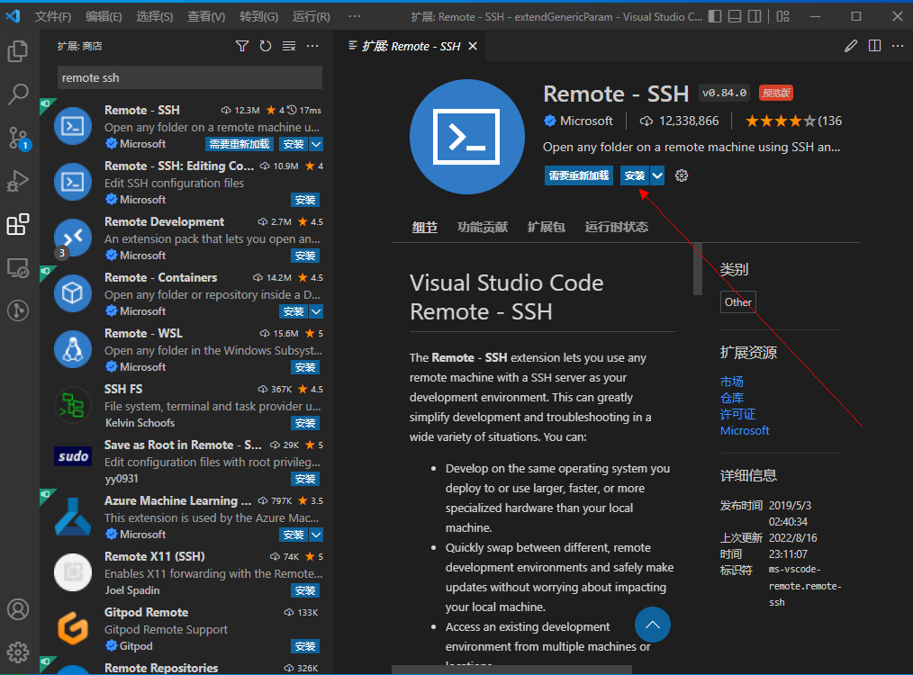
-
使用 Remote - SSH 进行远程工作，VSCode 会自动在远程主机上安装 server，linux_arm64 暂时只支持使用 Remote - SSH 的方式进行操作。
安装仓颉插件
首先，请在仓颉官方渠道（Gitee）根据平台架构下载相应安装包，交付内容为压缩包：Cangjie-vscode-version.tar.gz。
下载成功后，将其解压得到文件夹：Cangjie-vscode-version。该文件夹下有下列的内容
| 解压后生成文件与文件夹 | 文件功能 |
|---|---|
| .vsix 文件 | 插件端 |
VSCode 安装本地插件
按照下图所示操作，打开文件资源管理器对话框，找到要安装的插件.vsix，点击确定即可安装。

已经安装的插件可以在 INSTALLED 目录下查看

安装仓颉 SDK
仓颉 SDK 主要提供了 cjpm、cjc、cjfmt 等命令行工具，正确安装并配置仓颉 SDK 后，可使用工程管理、编译构建、格式化、静态检查和覆盖率统计等功能，开发者可以通过两种方式下载 SDK：
- 在官网下载 SDK 安装包，并在本地安装部署仓颉 SDK。
- 仓颉插件提供了仓颉 SDK 最新版本下载和更新功能，开发者可以在 VSCode 界面完成最新版本仓颉 SDK 的下载和本地环境部署。
离线手动安装和更新仓颉 SDK
开发者可以自行前往官网，手动下载需要的 SDK 版本，并在本地完成 SDK 路径配置。
Windows 平台
Windows 平台的 SDK 下载内容为：Cangjie-version-windows_x64.exe或Cangjie-version-windows_x64.zip。将其下载后内容放置在本地平台中。
Windows 版本的目录结构如下：

Linux 平台
linux_x64 平台的 SDK 下载内容为：Cangjie-version-linux_x64.tar.gz。
linux_aarch64 平台的 SDK 下载内容为：Cangjie-version-linux_aarch64.tar.gz。
将其下载后内容放置在本地环境中。linux 版本的目录结构如下：

macOS 平台
mac_x86_64 平台的 SDK 下载内容为：Cangjie-version-darwin_x64.tar.gz。
mac_aarch64 平台的 SDK 下载内容为：Cangjie-version-darwin_aarch64.tar.gz。
将其下载后内容放置在本地环境中。mac 版本的目录结构如下：

SDK 路径配置
安装完 Cangjie 插件后，即可配置 SDK 的路径。点击左下角齿轮图标，选择设置选项：
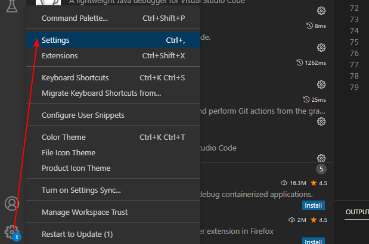
或直接右键点击插件，选择 Extension Settings，进入配置页面：

在搜索栏输入 cangjie, 然后选择侧边栏的 Cangjie Language Support 选项。
SDK 路径配置
-
找到 Cangjie Sdk: Option 选项，选择后端类型为 CJNative（默认是此选项）
-
找到 Cangjie Sdk Path: CJNative Backend 选项，输入 CJNative 后端 SDK 文件所在绝对路径
-
重启 VScode 生效
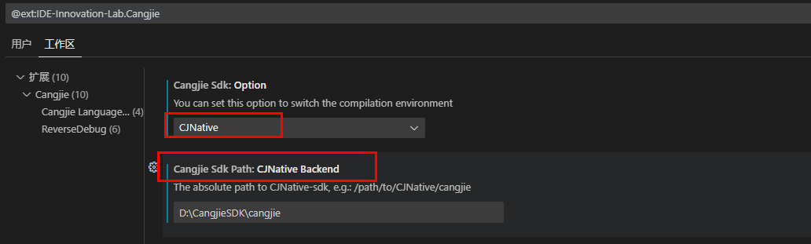
插件安装和更新仓颉 SDK
仓颉插件提供了仓颉 SDK 最新版本的下载与更新功能，开发者只需在 VSCode 界面即可完成仓颉 SDK 对应平台最新版本的下载更新与本地环境部署。
触发更新提示
当开发者进行如下操作时，仓颉插件会通过设置页面配置的仓颉 SDK 路径，获取对应 SDK 的版本信息，从而判断本地仓颉 SDK 是否为最新版本：
-
在 VSCode 界面打开仓颉源文件。
-
通过快捷键 "Ctrl + Shift + P"（mac 上快捷键为 "Command + Shift + P"） 调出 VSCode 的命令面板，然后选择 "Cangjie: Install/Update Latest SDK" 命令。

当本地 VSCode 没有配置仓颉 SDK 或者仓颉 SDK 非最新版本时，VSCode 界面右下角会弹出安装或更新提示。
安装仓颉 SDK
-
如果希望直接安装最新版本 SDK，可以在更新提示框点击 “ Install “ 按钮。
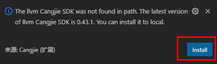
-
在弹出的窗口中选择下载和安装路径（注意路径不能存在名为
cangjie的文件夹）并单击 "Choose the SDK install path" 确定。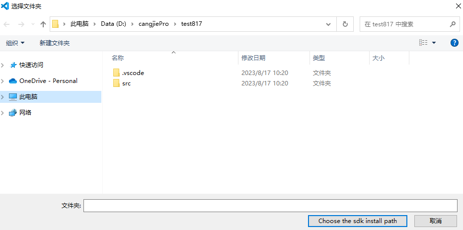
-
完成路径选择后，仓颉 SDK 开始下载：

-
下载完成后，会自动配置仓颉 SDK 的安装路径。

-
配置完成后，您可以使用最新版本的仓颉 SDK 进行本地开发。
使用限制
使用 VSCode 打开一个文件夹，将其中的仓颉源码分为两部分：一部分是顶层 src 目录下的仓颉源码，另一部分是非 src 目录下的仓颉源码。仓颉语言服务支持的目录结构如下：
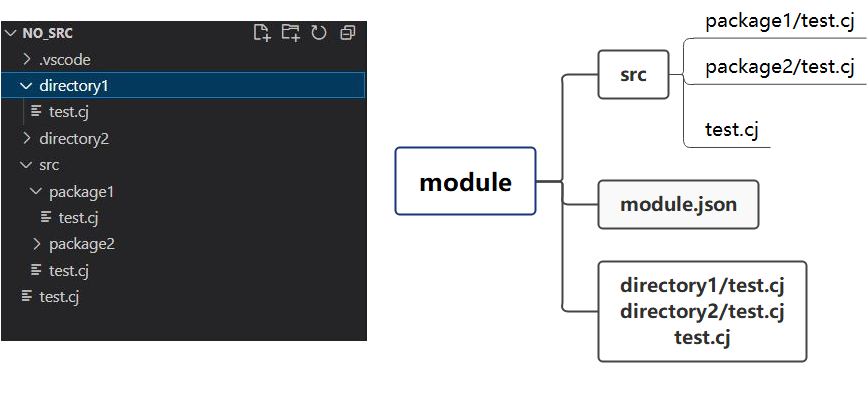
限制一
语言服务插件仅为用户打开的文件夹下仓颉源码提供语言服务。以用户打开的文件夹为仓颉项目的根目录 PROJECTROOT（如果用户没有明确指定模块名称，默认将 PROJECTROOT 目录名称作为模块名，以方便用户导入 src 下的包），PROJECTROOT/src 为 src 下仓颉源码（支持语言服务）；除了 src 下的仓颉源码，PROJECTROOT 下的所有源码称为非 src 下仓颉源码（支持语言服务）；PROJECTROOT 之外的仓颉源码称为外部源码（暂不支持语言服务）。
限制二
非 src 下每个文件夹都作为一个包，包名的声明和包的编译方式与 src 下顶层包（即 default 包）处理方式保持一致。非 src 下的仓颉源码可以导入标准库的包以及 src 下用户自定义的包，非 src 下的包无法被其他包导入。
限制三
Linux 、 Windows 、 macOS 平台下均需要先设置 Cangjie SDK 路径。
语言服务
功能简介
语言服务工具为开发者提供如下功能：语法高亮、自动补全、定义跳转、查找引用、诊断报错、选中高亮、悬浮提示、签名帮助、重命名等。
使用说明
语法高亮介绍及使用
VSCode 打开 Cangjie 工程中的.cj 文件，即可看到效果，VSCode 不同主题显示的代码高亮颜色不同，如下所示的 dark+ 主题：关键字显示粉色，函数定义、引用符号为黄色，函数形参、变量符号为蓝色，注释为绿色等。
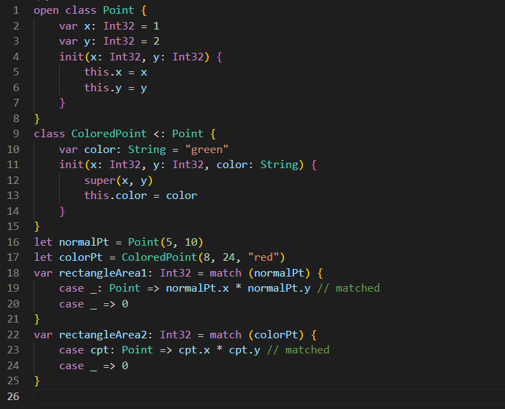
自动补全介绍及使用
VSCode 打开 Cangjie 工程中的.cj 文件，输入关键字、变量或 “.” 符号，在光标右侧提示候选内容，如下所示，可以用上下方向键快速选择想要的内容（注：需要切换为系统默认输入法），回车补全。


对于带参数的函数或者泛型提供模块化补齐，即当函数有参数或者带泛型的时候，选择函数补齐项之后会出现参数格式化补齐，如下图，填充数值之后按 tab 可以切换到下一个参数补齐直至模块化补齐结束，或者按 Esc 可以提前退出除当前选中模块外，其余模块的模块化补齐。

定义跳转介绍及使用
VSCode 打开 Cangjie 工程中的.cj 文件，鼠标悬停在目标上方 Ctrl + 单击鼠标左键触发定义跳转；或使用鼠标右键单击目标符号，选择 “Go to Definition” 执行定义跳转；或快捷键 F12 执行定义跳转，光标跳到定义处符号左端。

注意事项
- 在符号使用的地方使用定义跳转会跳转到符号定义处，支持跨文件跳转
- 在符号定义处使用定义跳转，如果此符号没被引用过，光标会跳转到符号左端
- 如果符号在其他地方被引用，会触发查找引用
跨语言跳转介绍和使用
语言服务插件支持 Cangjie 语言到 C 语言的跳转功能，VSCode 打开 Cangjie 工程中的.cj 文件，鼠标悬停在 Cangjie 互操作函数上方 Ctrl + 单击鼠标左键触发定义跳转；或使用鼠标右键单击目标符号，选择 “Go to Definition” 执行定义跳转；或快捷键 F12 执行定义跳转，光标跳到 C 语言定义处符号左端。
前置条件
- 本地安装华为自研 C++ 插件；
- 在 Cangjie 插件上设置需要跳转的 C 语言源码存放目录；
- 在当前工程下创建 build 文件夹，存放 compile_commands.json 文件 (该文件可通过 cmake 命令生成) 用于创建指定文件夹的索引文件。
跳转效果
foreign 函数会在用户设置的目录下查找对应的 C 语言函数，若找到则跳转至 C 源码的函数位置；除上述场景外均保持插件原有的定义跳转。

查找引用介绍及使用
VSCode 打开 Cangjie 工程中的.cj 文件，使用鼠标右键单击目标符号，选择 “Find All References” 执行符号引用预览，单击预览条目，可以跳转到对应引用处。
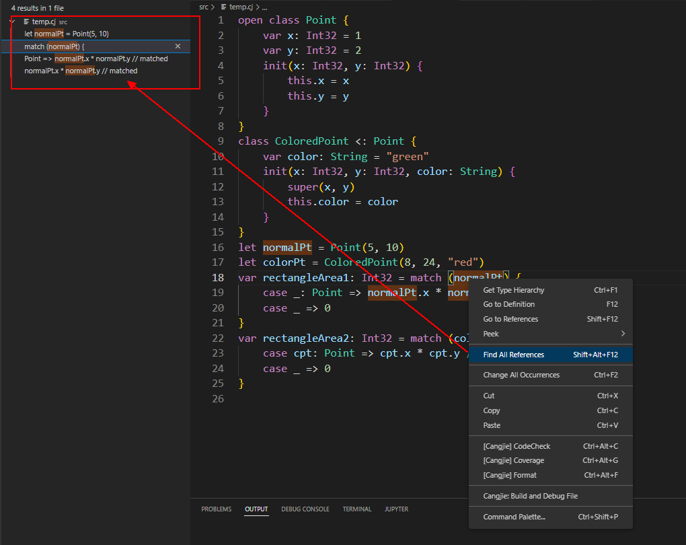
诊断报错介绍及使用
VSCode 打开 Cangjie 工程中的.cj 文件，当源码文件出现不符合 Cangjie 语法或语义规则的代码时，会在相关代码段出现红色波浪下划线，如下图所示，当鼠标悬停在上面，可以提示相应的报错信息，修改正确后，诊断报错自行消失。

选中高亮介绍及使用
VSCode 打开 Cangjie 工程中的.cj 文件，光标定位在一个变量或函数名处，当前文件中该变量的声明处以及其使用处都会高亮显示。

悬浮提示介绍及使用
VSCode 打开 Cangjie 工程中的.cj 文件，光标悬浮在变量处，可以提示出类型信息；悬浮在函数名处，可以提示出函数原型。
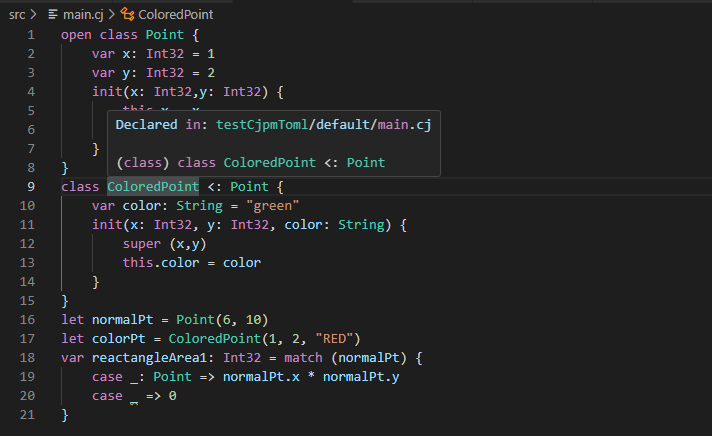
定义搜索介绍及使用
VSCode 打开 Cangjie 工程中的任意.cj 文件，按住Ctrl + T 后会出现搜索框，输入想要搜索的符号定义名，会显示出符合条件的搜索结果，单击搜索结果的条目，可以跳转到定义的对应位置处。

目前支持搜索的定义类型如下表格：
| class | interface | enum | struct |
| typealias | toplevel 的函数 | toplevel 的变量 | prop |
| enum 构造器 | 成员函数 | 成员变量 |
重命名介绍及使用
VSCode 打开 Cangjie 工程中的.cj 文件，光标定位在想要修改的用户自定义编写名称上，右键选择 Rename Symbol 或者快捷键 F2 方式打开重命名编辑框。

编辑完毕回车完成重命名的实现。

目前重命名支持的用户自定义类型如下：
| class 类名称 | struct 结构体名称 | interface 接口名称 | enum 枚举名称 | func 函数名称 |
| type 别名名称 | <T>泛型名称 | 变量名称 | 自定义宏名称 |
大纲视图显示介绍及使用
VSCode 打开 Cangjie 工程中的任意.cj 文件，在 OUTLINE 视图中显示当前文件的符号，目前支持两层结构的显示（第一层主要为 toplevel 中定义的声明，第二层主要为构造器及成员）。
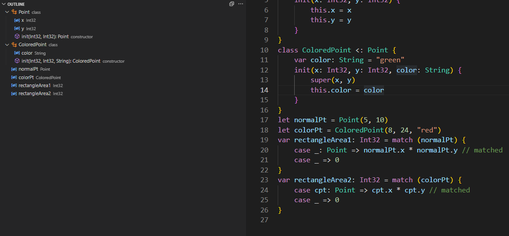
目前支持大纲视图显示的符号类型如下表格：
| class | interface | enum | struct |
| typealias | toplevel 的函数 | toplevel 的变量 | prop |
| enum 构造器 | 成员函数 | 成员变量 |
面包屑导航介绍及使用
VSCode 打开 Cangjie 工程中的任意.cj 文件，在面包屑导航中显示某个符号当前所处的位置以及该符号在整个工程中的位置路径。

目前支持面包屑导航的符号类型如下表格：
| class | interface | enum | struct |
| typealias | toplevel 的函数 | toplevel 的变量 | prop |
| enum 构造器 | 成员函数 | 成员变量 |
签名帮助介绍及使用
VSCode 在输入左括号和逗号时会触发签名帮助，触发后只要还在函数参数范围内提示框会一直随光标移动（可与补全共存），如下图，会给用户提供当前函数参数信息，以及高亮当前函数位置参数帮助用户补充参数。
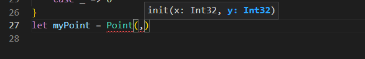
显示类型层次结构介绍及使用
VSCode 打开 Cangjie 工程中的 .cj 文件，光标定位在 class/interface/enum/struct 的名字上，右键选择 Show Type Hierarchy ，在左侧就会显示该类型层次结构。

点击下拉框可以继续显示，

在箭头所示位置可以在显示子类和父类之间切换。
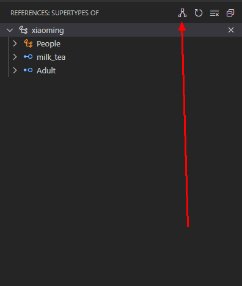
调用类型层次结构介绍及使用
VSCode 打开 Cangjie 工程中的 .cj 文件，光标定位在函数的名字上，右键选择 Show Call Hierarchy ，在左侧就会显示该函数的调用类型层次结构。
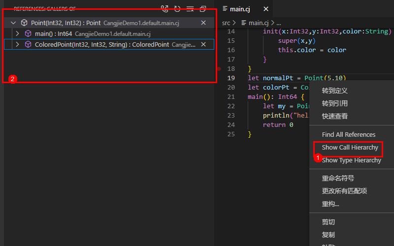
点击下拉框可以继续显示

通过点击标识位置可以在显示调用函数和被调用函数之间切换。
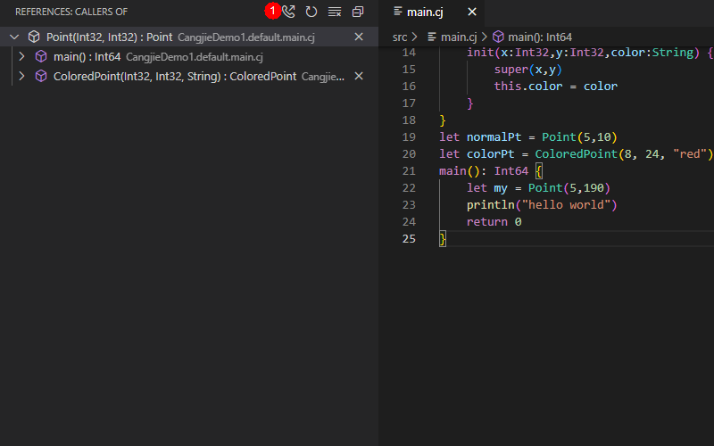
工程管理
工程目录：
Project_name：用户输入的名称
│ └── src：代码目录
│ ├── main.cj：源码文件
│ ├── cjpm.toml：默认的 cjpm.toml 配置文件
通过 VSCode 命令面板创建仓颉工程
在 VSCode 中按 "F1" 或者 "Ctrl + Shift + P"（mac 上快捷键为 "Command + Shift + P"） 打开命令面板，然后按照以下步骤创建仓颉工程：
第一步：选择创建 Cangjie 工程命令

第二步：选择 Cangjie 后端
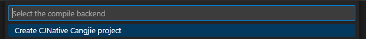
第二步：选择 Cangjie 工程模板
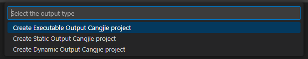
第三步：选择工程路径

第四步：输入工程名称

第五步：创建完成并打开

通过可视化界面创建仓颉工程
第一步：打开命令面板选择可视化创建 Cangjie 工程命令

第二步：打开可视化创建 Cangjie 工程界面
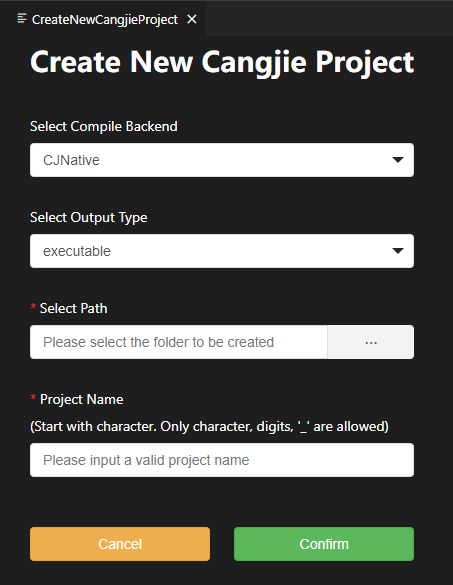
第三步：选择工程类型

第四步：点击选择工程路径
第五步：输入工程名称
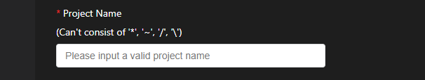
第六步：点击 Confirm 创建工程
编译构建
注：VSCode 中可视化方式提供的仓颉功能编译构建能力依赖 cjpm 工具，该工具要求打开的仓颉工程的模块内必须包含规范的 cjpm.toml 文件。若没有该文件仍想执行工程的编译构建，可在终端使用 cjc 命令。
在 VSCode 中提供四种方式来实现 Cangjie 工程的编译构建方式。
编译构建方式
在命令面板执行命令
打开命令面板，通过分类词Cangjie来快速找到如下编译相关命令：
-
Parallelled Build并行编译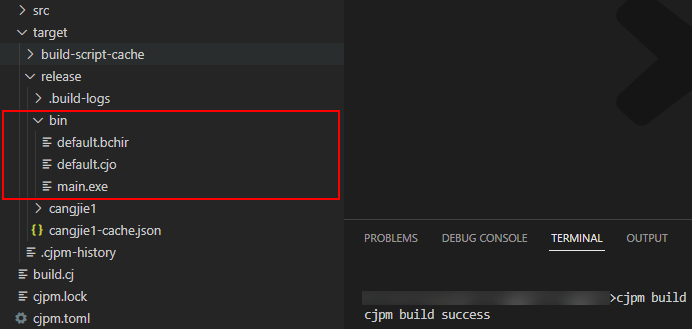
执行并行编译后，在工程文件夹下会生成
target目录，target目录下有一个release文件夹，release文件夹下包含三个目录：.build-logs目录、bin目录、工程名同名的目录。bin目录下存放可执行文件（可执行文件只有在cjpm.toml的output-type为executable时才会生成），工程名同名目录下存放编译的中间产物。在 output Panel 上会打印编译成功与否
-
Build With Verbose编译并展示编译日志
该编译参数除了执行编译外，还会打印编译日志
-
Build With Debug可生成 debug 版本的目标文件该命令的编译结果中带有 debug 信息，供调试使用
-
Build With Coverage可生成覆盖率信息该命令在编译结果中带有覆盖率的信息
-
Build With Alias编译并指定输出可执行文件的名称
执行该命令，按下回车后，会弹出一个输入栏，需要用户为工程的编译结果赋予一个新的名字。该命令只对
cjpm.toml的output-type为executable时有效。如输入的是hello，则编译后的二进制文件如下：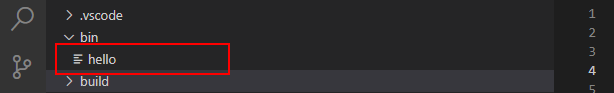
-
Build With Increment增量编译用来指定增量编译
-
Build With CustomizedOption按条件透传cjpm.toml中的命令。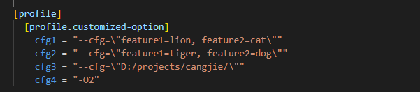
使用该选项需要先在 cjpm.toml 中配置
customized-option字段。然后在命令面板输入Build With CustomizedOption,回车后可以选择需要的参数，参数可多选，选择后回车即可。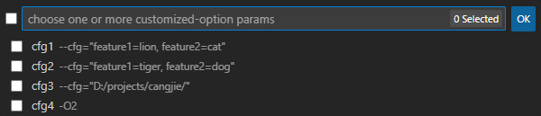
若没有在 cjpm.toml 中配置
customized-option字段，并执行了该条命令，插件会提示用户先配置改字段
-
Build With TargetDir编译并在指定路径生成编译产物选择该命令执行后，可指定编译产物的输出路径，默认不作输入操作则以 cjpm.toml 中的
target-dir字段为路径。
当输入的编译产物路径与 cjpm.toml 中的
target-dir字段不同时，会弹出提示是否覆盖 cjpm.toml 中的target-dir字段，若选择 Yes 覆盖，则会将 cjpm.toml 中target-dir字段覆盖成输入的值。
该执行命令执行成功后，会在指定的路径下生成编译产物。
-
Build With Jobs执行编译之前自定义最大并发度支持通过执行该命令在编译之前自定义最大并发度，输入参数为任意数字，设置范围为 (0, cpu 核数 * 2]。
当在输入框输入非数字时，会终止操作，并提示用户输入数字内容：Invaild input! The input should be number.
当在输入框输入的范围超出所支持的范围 (0, cpu 核数 * 2] 时，会默认采用 cpu 核数，并提示超出可选范围的 warning 信息。
-
Build With CodeCheck执行编译的时候进行 CodeCheck 静态代码检查执行该命令编译工程时，会对当前工程进行 CodeCheck 静态代码检查，如果检查到【要求】级别的代码规范违规，则编译失败，检查到【建议】级别的违规仅告警，正常完成编译。
-
Build With MultiParameter多参数编译仓颉工程的编译可以叠加多个参数，在命令面板搜索到
Build With MultiParameter命令后，选择需要叠加的参数，其中--target 参数会根据 cjpm.toml 中的cross-compile-configuration字段的设置来决定是否显示，如果用户没有配置cross-compile-configuration的内容，则--target参数选项会隐藏；--<customized-option>参数会根据 cjpm.toml 中的customized-option字段的设置来决定是否显示，如果用户没有配置customized-option的内容，则--参数选项会隐藏。 
将用户想叠加的参数勾选，然后按回车键或者点击 ok 按钮。用户也可点击界面中的向左箭头，重新选择编译参数
如果叠加的参数中选择了
cjpm build -o，那么需要用户输入一个别名字符串然后按回车键执行叠加命令操作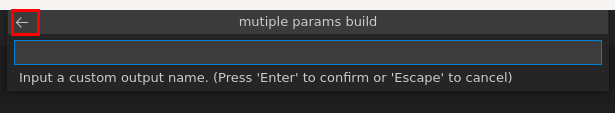
如果叠加参数中选择了
cjpm build --target=<name>,那么用户可以选择一个想要交叉编译的平台
如果叠加参数中选择了
cjpm build --<customized-option>,那么用户可以选择透传参数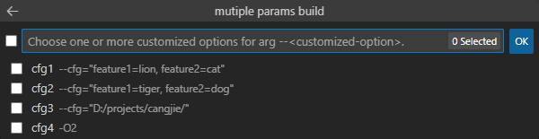
叠加命令的编译结果就是这些命令分别执行的总和。
-
Update Cjpm.toml更新 cjpm.lock 文件在修改完 cjpm.toml 文件后需要执行该命令，更新 cjpm.lock 文件。如果是通过 UI 界面修改的 cjpm.toml 文件的话，用户不需要手动执行该操作
-
Execute Test File用于编译单元测试产物并执行对应的单元测试用例，并直接打印测试结果 -
Test With NoRun用于编译对应测试产物 -
Test With SkipBuild测试产物存在的前提下，用于执行对应测试产物 -
Test With Jobs执行单元测试之前自定义最大并发度，操作与Build With Jobs相同 -
Test With MultiParameter多参数执行仓颉工程的单元测试在选择该条命令后，首先输入指定待测试的包路径，若不需要指定，则直接按 Enter 键
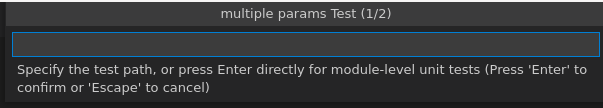
此步骤可通过输入多个包的路径并用空格分隔，可以实现多包并发单元测试

然后选择要叠加的参数
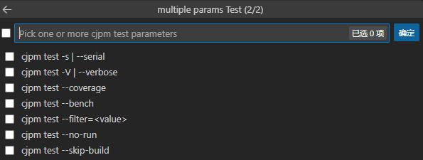
如果选择了
--filter=<value>参数，则还需要输入对应的过滤测试子集的表达式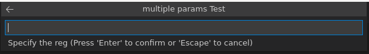
输入过滤测试子集的表达式后便能执行 cjpm test 的完整命令。执行结果会在 output 面板输出
若是在 cjpm.toml 中配置了
cross-compile-configuration和customized-option则可选择的参数会有--target=<name>和--<customized-option>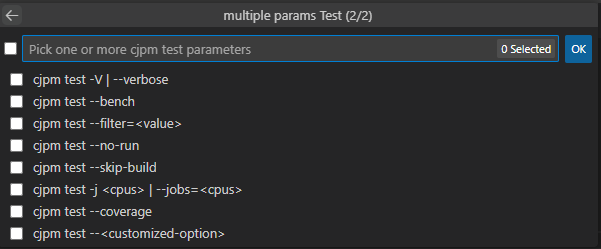
如果选择了
--target=<name>参数，则还需要选择对应的平台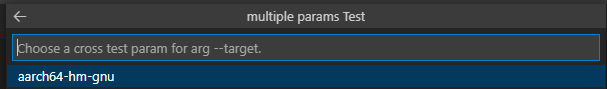
--target暂时只支持在 SUSE 平台下选择aarch64-hm-gnu使用如果选择了
--<customized-option>参数，则还需要选择条件选项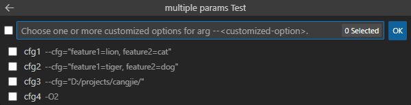
-
Clean Build Result清除编译结果（工程目录下的 build 目录） -
Check Circular Dependencies检测文件依赖 -
Edit Configuration (UI)打开 UI 配置界面
在终端进行执行编译构建命令
提供用户在 VSCode 的终端面板直接使用编译构建命令（cjpm）对仓颉工程进行编译构建。但需要用户做如下操作：
关闭新建的工程，重新打开 VSCode（reload 不行）
然后可以在终端执行 cjpm 的操作了

点击运行按钮运行工程
用户可以点击 cj 文件编辑区的运行按钮来运行整个仓颉工程
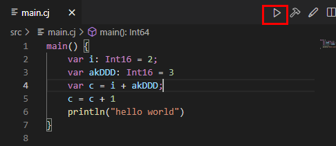
若整个工程中配置的output-type为executable时会在终端面板打印运行结果，否则只会显示编译的结果。
点击运行按钮执行的编译过程是结合当前的 cjpm.toml 和 cjpm_build_args.json 的配置来进行的
点击锤子按钮编译工程
用户可以点击 cj 文件编辑区的锤子按钮编译整个仓颉工程
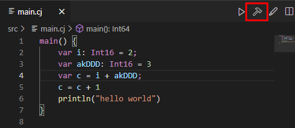
点击锤子按钮执行的编译过程与运行按钮一致，也是结合当前的 cjpm.toml 和 cjpm_build_args.json 的配置来进行的；不同的是若整个工程中配置的output-type为executable，运行按钮在编译完成后再运行整个工程，而锤子按钮只会编译工程，无后续运行动作。
可视化配置编译构建参数
在编译构建的过程中需要配置工程目录中的 toml 和 json 文件，cjpm.toml 和 cjpm_build_args.json 对这两个文件，可以直接修改 toml 和 json 文件本身，也可以点击编辑按钮或者在命令面板执行Edit Configuration (UI)命令打开可视化编辑的 UI 界面。


编译构建参数的 UI 界面如下：
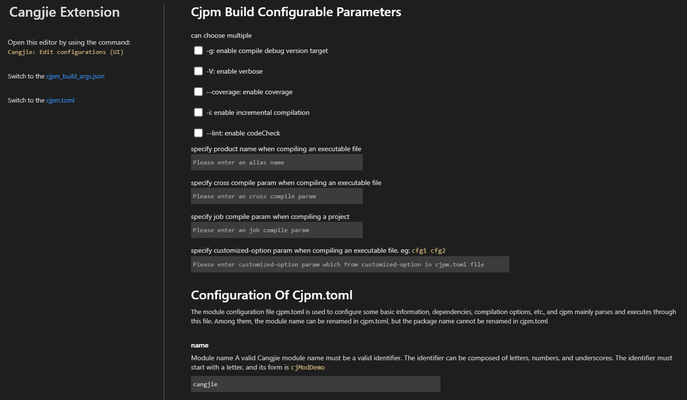
左边有两个的蓝色的链接，点击后可跳转到对应的 toml 或者 json 文件。
右边的上半部分是对工程文件中.vscode目录下的 cjpm_build_args.json 的配置，通过复选框或者输入框的形式确定编译要使用的参数，修改后会同步到 cjpm_build_args.json 文件中。
右边的下半部分是对工程中的 cjpm.toml 文件的配置，对于输入框形式的配置，用户输入内容且光标不在输入框后便生效到 cjpm.toml 文件中。
注意：
当仓颉工程中的 cjpm.toml 文件和参数配置界面同时在 VSCode 的编辑区显示时（如下图），对 toml 文件的修改不会同步到 UI 界面上。

对于构建参数cross-compile-configuration,可以通过点击Add Configuration 按钮添加选项
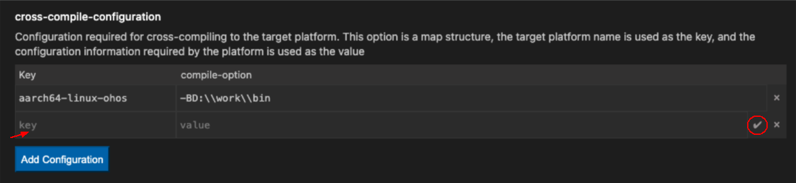
然后在 key 和 compile-option 处填写对应的内容，点击红色圆圈圈出来的对钩按钮（也称为提交按钮）与 cjpm.toml 保持同步，点击提交按钮后，该按钮会隐藏，若用户再次修改某个字段的内容，直接点击该字段进行修改，修改完后按回车键便可以与 cjpm.toml 保持同步；若想删除该条配置，用户只需点击该条选项的叉号按钮。
添加的配置在不填写第一个字段key就直接回车或者按提交按钮，会提醒用户必须要填写第一个字段，该场景下提交的内容不会同步到 cjpm.toml 中。在 UI 界面目前不会直接删除该条配置，用户刷新 UI 界面后会自动删除，内容与 cjpm.toml 保持一致。package-configuration和cross-compile-configuration类似，如下显示为package-configuration新增配置时第一个字段为空的场景。

对于package-configuration参数，其添加和修改方式与cross-compile-configuration大致一致，其中output-type字段为下拉框选项，其可选的类型有 executable、static、dynamic、null。新添加的配置，该字段被初始化为 null，用户可以根据自己的需要选择。当选择为 null 时，该字段同步到 cjpm.toml 后会删除该字段。
注意：
在 UI 界面配置 cjpm.toml 的内容时，只有对于
customized-option参数中配置的--cfg 中路径中的=需要转义，其他不需要添加转义符号，但直接在 cjpm.toml 中填写时，需要加转义符号。如在给 package-configuration 字段的 p1 配置 compile-option 时，在 UI 界面对--link-options 设置内容时只需要加引号即可，即--link-options="-rpath=xxx"，而在 toml 文件中，需要填写--link-options=\"-rpath=xxx\"。在 UI 界面对customized-option参数配置的--cfg 路径中包含=时，=需要转义，即--cfg="D:/projects/cang\=jie"，而在 toml 文件中，需要填写--cfg=\"D:/projects/cang\\=jie\"。
对于customized-option参数，其添加修改方式与cross-compile-configuration一致。
注意：
customized-option 的条件不能设置内置的条件（@When[os == "Linux"] 不能作为 customized-option 的条件，即"cfg1" : "--cfg ="os=Linux""是不允许的），只能添加用户自定义条件。具体可以参考 Cangjie > Language Guide 文档的
条件编译章节。
三方库便捷导入
三方库导入方式
注 ：三方库便捷导入的方式只适用于当前打开的仓颉工程的主 module，其他子 module 想要使用这种方式导入外部库的话，可以单独以工程的方式打开使用
在仓颉工程中，可以导入外部的三方库，且可以在 cjpm.toml 中进行配置，他们分别是
dependencies： 当前仓颉模块依赖项目，里面配置了当前构建所需要的其它模块的信息，包含版本号、路径。这两个选项必须全部配置且不为空，否则会执行失败并报错。在使用过程中，优先使用此方式进行项目依赖导入。
dev-dependencies: 使用方式与 dependencies 保持一致，具有与 dependencies 字段相同的格式。它用于指定仅在开发过程中使用的依赖项，而不是构建主项目所需的依赖项，例如仅在测试中使用的依赖项。如果开发者是库作者，则应将此字段用于此库的下游用户不需要使用的依赖项。
bin-dependencies ：非特殊需求场景下，建议使用 dependencies的方式导入依赖。目前插件仅支持本地的 bin-dependencies 配置。
当前仓颉模块依赖的已编译好的 package。其有两种导入形式。以导入下述的 pro0 模块和 pro1 模块的三个包来举例说明。
├── test
│ └── pro0
│ ├── libpro0_xoo.so
│ └── xoo.cjo
│ ├── libpro0_yoo.so
│ └── yoo.cjo
│ └── pro1
│ ├── libpro1_zoo.so
│ └── zoo.cjo
└── src
└── main.cj
├── cjpm.toml
方式一，通过 package-option 导入：
[target]
[target.x86_64-w64-mingw32]
[target.x86_64-w64-mingw32.bin-dependencies]
[target.x86_64-w64-mingw32.bin-dependencies.package-option]
pro0_xoo = "./test/pro0/xoo.cjo"
pro0_yoo = "./test/pro0/yoo.cjo"
pro1_zoo = "./test/pro1/zoo.cjo"
这个选项是个 map 结构，pro0_xoo 名称作为 key，与 libpro0_xoo.so 相对应，前端文件 cjo 的路径作为 value，对应于该 cjo 的 .a 或 .so 需放置在相同路径下，且对应的 cjo 模块文件必须与模块名来源文件放置在相同的文件夹下，该文件夹下不能有任何其他的文件或者文件夹。
方式二，通过 path-option 导入：
[target]
[target.x86_64-w64-mingw32]
[target.x86_64-w64-mingw32.bin-dependencies]
path-option = ["./test/pro0", "./test/pro1"]
这个选项是个字符串数组结构，每个元素代表待导入的路径名称。cjpm 会自动导入该路径下所有符合规则的仓颉库包，这里的合规性是指库名称的格式为 模块名_包名。库名称不满足该规则的包只能通过 package-option 选项进行导入。
注意，如果同时通过 package-option 和 path-option 导入了相同的包，则 package-option 字段的优先级更高。
对应 IDE 上，其在导航栏视图中的呈现形式如下：
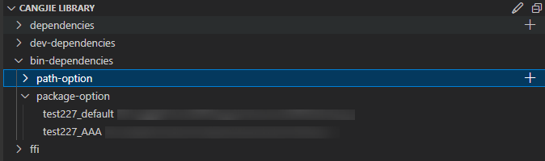
用户可以在其对应的导入方式子目录下导入或者工程需要的模块
其在 UI 界面的显示如下：

ffi：当前仓颉模块外部依赖 c 库。里面配置了依赖该库所需要的信息，包含名称、路径字段
为方便用户添加这几类外部库 ，在 IDE 的资源管理器的视图栏添加了CANGJIE LIBRARY栏
在工程初始化后，用户便可以通过点击分类栏的加号按钮添加对应的三方库。


也可以通过点击三方库上的减号删除对应的库
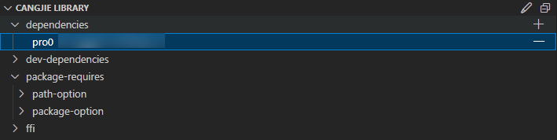
用户还可以点击视图栏的编辑按钮，打开三方库导入的可视化界面来导入或者删除三方库


以上的删除和添加操作都会同步到工程的 module.json 中。
三方库导入限制
- 项目中需要链接动态库（ c 库、仓颉库）时 ，运行时会加载不到，需自行设置 LD_LIBRARY_PATH ，执行下 export LD_LIBRARY_PATH=xxx:$LD_LIBRARY_PATH；主要的影响就是可以编译构建时会构建失败，需要用户自己设置 LD_LIBRARY_PATH。
- cjpm.toml 中修改的内容不会直接修改 treeView 和 UI 界面，需要用户更新一下，即重新点击 treeView 或者 UI 界面。
- treeView 中在库分类处添加外部库，且此时库分类目录是关闭状态，则添加后需要自己打开目录查看。
- UI 界面的字段暂不支持 hover 显示内容的功能。
- 在 UI 界面非用户添加的外部库，其路径与 cjpm.toml 保持一致。用户添加的库显示绝对路径。treeView 的路径均显示绝对路径。
调试服务
功能简介
仓颉编程语言提供了可视化调试服务，方便用户调试仓颉程序。该插件提供了如下功能：
- Launch: 启动调试进程
- Attach: 附加到已启动的进程
- 支持源码断点、函数断点、数据断点、汇编断点
- 支持源码内单步调试、运行到光标处、步入、步出、继续、暂停、重启、停止调试
- 支持汇编内单步、步入、步出
- 支持表达式求值
- 支持变量查看和修改
- 支持在调试控制台中查看变量
- 支持查看被调试程序的输出信息
- 支持反向调试
- 支持 unittest 的运行和调试
使用说明
说明：
- 如果您是第一次使用 VSCode 调试功能，可以查看 VSCode 调试服务使用手册 https://code.visualstudio.com/docs/editor/debugging 。
- 调试服务当前支持 Windows 和 Linux 版本的 VSCode 中安装使用。
- 受调试器限制，循环代码中存在条件断点时，执行 PAUSE 操作可能导致后续调试无法进行。
- VARIABLES 视图修改变量时，不会触发存在依赖关系的变量的刷新。
- 调试服务依赖仓颉 SDK 包内 liblldb 动态库文件，请提前配置仓颉 SDK 路径。SDK 配置方式请参考本手册 ”安装说明“ 目录下 ”插件安装与环境配置“。
启动调试
Launch
说明：
创建仓颉工程请参考本手册 ”工程管理“ 模块介绍。
-
launch 模式仓颉工程调试
- 未创建 launch.json 文件时，点击 "Run and Debug" > "Cangjie(cjdb) Debug" 启动调试。
- 已创建 launch.json 文件时，在 launch.json 文件中点击 "Add Configuration..." > "Cangjie Debug (CJNative) : launch" > "Build And Debug Cangjie Project" 添加调试配置，选择添加的配置启动调试。
-
launch 模式单文件调试
针对单文件调试，可以选中需要调试的仓颉源文件，右键选择 “Cangjie: Build and Debug File” ，该操作会生成编译配置文件 task.json 和编译脚本，并且会根据 task.json 配置执行脚本，编译出可调试的二进制文件，然后启动调试。
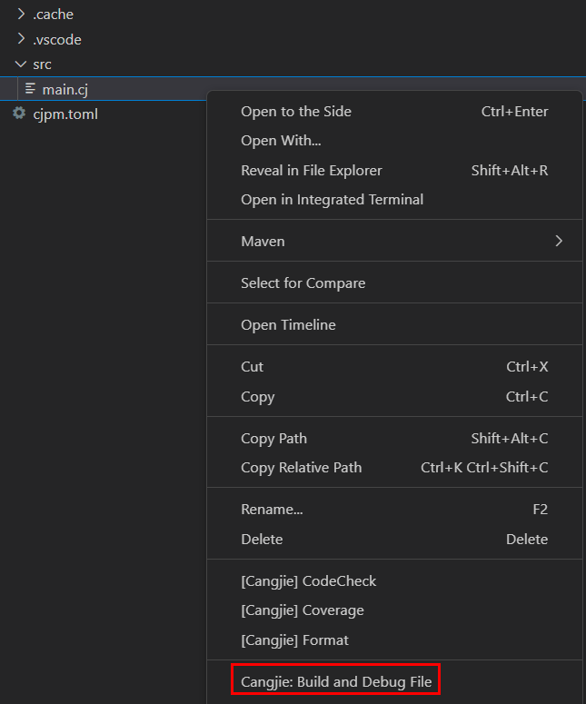
-
launch 模式调试手动编译的可执行文件
- 使用 cjc 编译器或 cjpm 手动编译出可调试的二进制文件。
- 点击 "Run and Debug" > "Cangjie(cjdb) Debug" > "Cangjie (CJNative): launch" > "Choose Executable File Later" 启动调试。
-
launch debugMacro 模式仓颉工程调试宏展开后的代码
调试宏展开后的代码文件（
.marcocall为后缀的文件），此时宏对应的原文件无法调试。 -
launch 模式调试远程进程（支持 Linux 远程到 Linux）
launch 模式下调试远程进程时，调试服务会将本地编译的二进制文件推送到远程平台，然后调试远程平台的二进制文件。
- 在远程平台启动 lldb-server（lldb-server 建议使用 cjdb 自带 lldb-server，路径/cangjie/third_party/llvm/lldb/bin/lldb-server）,启动命令
/**/**/cangjie/third_party/llvm/lldb/bin/lldb-server p --listen "*:1234" --server - 在本地机器使用 cjc 编译器或 cjpm 手动编译出可调试的二进制文件。
- 单击 "Run and Debug" 按钮启动调试。
launch.json 配置示例
{ "name": "Cangjie Debug (cjdb): test", "program": "/**/**/test", "request": "launch", "type": "cangjieDebug", "externalConsole": false, "remote": true, "remoteCangjieSdkPath": "/**/**/cangjie", "remoteFilePath": "/**/**/test", "remoteAddress": "1.1.1.1:1234", "remotePlatform": "remote-linux" } - 在远程平台启动 lldb-server（lldb-server 建议使用 cjdb 自带 lldb-server，路径/cangjie/third_party/llvm/lldb/bin/lldb-server）,启动命令
-
配置属性：
属性 类型 描述 program string 被调试进程的全路径，该文件将推送到远程平台，例如：/home/cangjieProject/build/bin/main remote boolean 启动远程 launch 进程，remote 为 true remoteCangjieSdkPath string 远程平台仓颉 SDK 路径 remoteFilePath string 远程平台存放推送文件的全路径，请确保路径 /home/test/ 合法且存在， main为推送到远程的文件名，例如：/home/cangjieProject/build/bin/mainremoteAddress string 被调试进程所在的机器 IP 和 lldb-server 监听的端口号，数据格式：ip:port remotePlatform string 远程的平台，仅支持 remote-linux（远程 linux 平台） env object 为被调试程序设置运行时的环境变量，该配置将覆盖系统环境变量，如需在系统配置基础上追加配置，在配置项结尾增加 ${env:PATH}。例如："PATH":"/home/user/bin: ${env:PATH}", "LD_LIBRARY_PATH":"/home/user/bin:${env:LD_LIBRARY_PATH}"。
Attach
-
attach 模式调试本地进程
- 在 launch.json 文件中点击 "Add Configuration..." > "Cangjie Debug (CJNative) : attach" 添加调试配置，选择添加的配置启动调试
- 在弹出界面选择要调试的进程即可启动调试 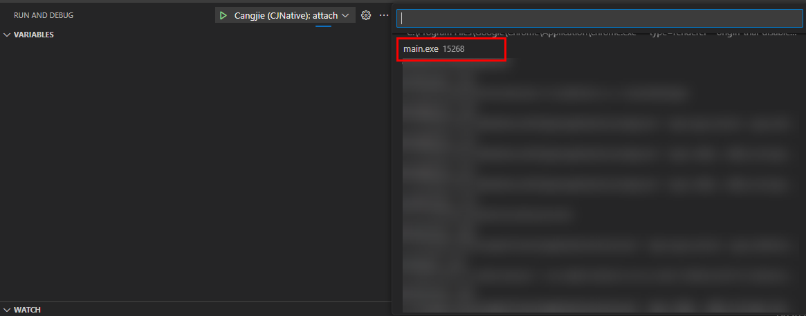
-
attach 模式调试远程进程
- 在本地机器编译出可调试二进制文件并将该文件拷贝到远程机器。
- 在远程机器启动 lldb-server（lldb-server 建议使用 cjdb 自带 lldb-server，路径/cangjie/third_party/llvm/lldb/bin/lldb-server）,启动命令
/**/**/cangjie/third_party/llvm/lldb/bin/lldb-server p --listen "*:1234" --server - 在远程机器启动被调试的二进制文件
- 在本地机器配置 launch.json 文件，并启动调试
launch.json 配置属性：
{ "name": "Cangjie Debug (cjdb): test", "processId": "8888", "program": "/**/**/test", "request": "attach", "type": "cangjieDebug", "remote": true, "remoteAddress": "1.1.1.1:1234", "remotePlatform": "remote-linux" } -
配置属性：
属性 类型 描述 processId string 被调试进程的 pid（配置 pid 时优先 attach pid，未配置 pid 则 attach program） program string 被调试进程的全路径，例如：/home/cangjieProject/build/bin/main remote boolean attach 本机器进程，remote 为 false；若 attach 远程进程，将 remote 设置为 true remoteAddress string 远程调试时被调试进程所在的机器 IP 和 lldb-server 监听的端口号，数据格式：ip:port remotePlatform string 远程调试时远程的平台，仅支持 remote-linux（远程 linux 平台）
调试信息查看
当进程处于 stopped 状态时，可以在 VSCode 界面左侧查看断点、当前线程、堆栈信息和变量，并支持编辑断点和修改变量，您也可以在 Editor 窗口 将鼠标悬浮于变量名称上查看变量值。支持在TERMINAL窗口查看被调试程序的输出信息。

表达式求值
说明：
表达式暂不支持元组类型和基础 Collection 类型。
- 您可以在 WATCH 窗口添加按钮或空白处双击键入表达式。
- 您可以在 Debug Console 窗口键入表达式。
- 您可以在 Editor 窗口 双击选中变量，右键选择 Evaluate in Debug Console。
程序控制
- 您可以单击顶部调试工具栏上的图标控制程序，包括单步执行、步入、步出、继续、暂停、重启或停止程序。


- 您可以在鼠标光标处点击右键选择
运行到光标处。
- 您可以在源码视图右键选择
Open Disassembly View进入汇编视图。 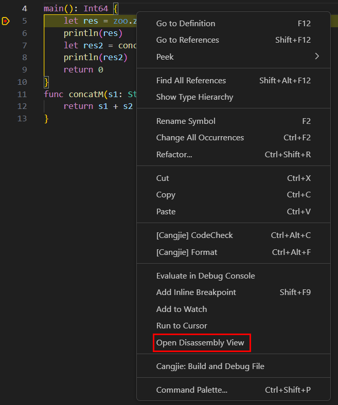
调试控制台
说明：
cjdb 介绍请查看本手册内 ”仓颉语言命令行工具使用指南“ 目录下 ”仓颉语言调试工具使用指南“
执行 cjdb 命令
您可以在 “调试控制台” 中输入 cjdb 命令来调试程序，命令必须遵循以下格式：
命令必须以 -exec 开头，要执行的子命令必须是正确的 cjdb 命令。
使用 cjdb 命令 n 执行单步调试的示例如下：
-exec n

查看变量
您可以在 “调试控制台” 中输入变量名称查看变量值：

反向调试
说明：
- 反向调试基于记录重放，开启反向调试功能后，调试服务会记录用户正向调试的所有停止点（断点+单步），以及停止点的线程、堆栈、变量等调试信息。进入反向调试模式，支持查看历史记录点的调试信息。
配置
您可以通过点击左下角齿轮图标，选择设置选项，在搜索栏输入 cangjie，找到 Reverse Debug 选项，勾选 Enable reverse debug，开启程序调试历史停止点信息的自动记录，同时可以配置自动记录的线程个数、堆栈个数、变量作用域、复杂类型变量子变量的展开层数和子变量个数，配置修改后，需要重新启动仓颉调试。

工具栏
您可以单击顶部调试工具栏上的时钟图标进入反向调试模式，使用工具栏上正反向继续、正反向单步控制程序，查看历史记录的线程、堆栈、变量信息，如下图：
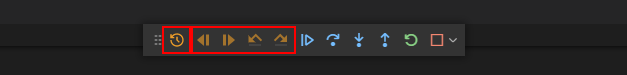
您可以单击顶部调试工具栏上的方块图标退出反向调试模式，调试会回到正向调试的最后停止点，如下图：
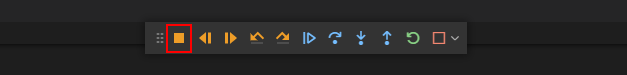
反向断点
说明：
- 反向断点是一种特殊的源码断点（Log Point），正向调试过程中不会停止，也不会输出自动生成的 Log Message（用于标记反向断点）。
- 在正向调试时，用户提前设置反向断点，调试服务后台会记录进程走过的反向断点的调试信息。
- 在进入反向调试模式时，反向断点会作为停止点（断点型），可以查看该断点处的线程堆栈变量等调试信息。
- 在进入反向调试模式时，不支持设置反向断点。
反向断点设置方式：
-
在仓颉源文件编辑器视图内右键选择
Cangjie: Add Reverse Breakpoint为光标所在行设置一个反向断点；
-
在仓颉源文件上右键选择
Cangjie: Add Auto Reverse Breakpoints插件会分析该文件内函数的入口和出口位置并自动设置反向断点； 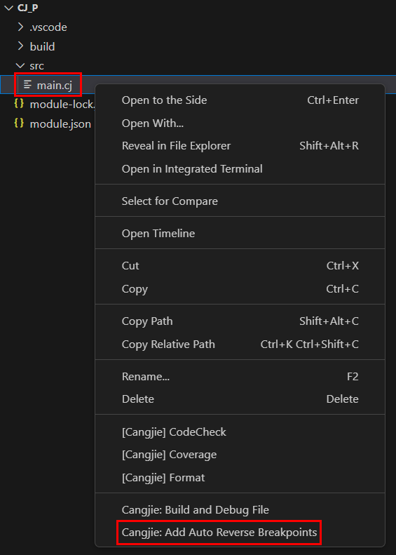 -
在文件夹上右键选择
Cangjie: Add Auto Reverse Breakpoints插件会分析该文件夹内仓颉源文件中的函数的入口和出口位置并自动设置反向断点。
时间线
说明：
- 时间线展示了反向调试模式下记录的所有停止点（断点+单步），通过时间线拖拽，可以查看历史停止点的信息。
时间线入口位于 VSCode 右下方区域，您可以在右下方的 Tab 标签行右键将时间线 Cangjie Debug Timeline 开启或隐藏，也可以在 View 菜单中选择 Open View 开启，如下图：
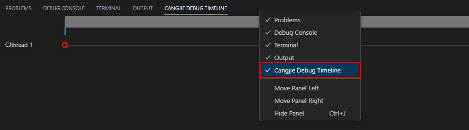
- 主时间线上有左右游标，您可以分别拖动左右游标选出某一段时间区域；在选中一段区域之后，鼠标放在选中区域上方时会变为手的形状，此时您可以左右拖动此区域；
- 将鼠标放在主时间线上，鼠标变为十字光标的形状，此时按住鼠标往前或往后拖动，您可以将鼠标滑过的区域设为新的时间区域；
- 您可以通过 Ctrl + 鼠标滚轮的方式，放大和缩小选中区域；
- 每条时间线标识一个仓颉线程或者系统线程；如下图：
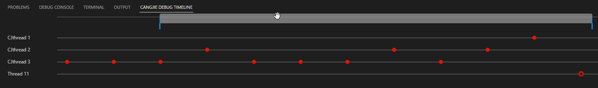
您可以点击时间线上的记录点， editor 界面同步刷新（定位到源码的行），调试信息界面同步刷新（展示该记录点的线程、栈帧和变量）。
unittest 运行和调试
前置条件
模块的单元测试代码应采用如下结构，其中 xxx.cj 表示该包的源码，对应单元测试代码文件命名应以 _test.cj 结尾。具体单元测试代码的写法可参考标准库用户手册。
│ └── src
│ ├── koo
│ │ ├── koo.cj
│ │ └── koo_test.cj
│ ├── zoo
│ │ ├── zoo.cj
│ │ └── zoo_test.cj
│ ├── main.cj
│ └── main_test.cj
│ ├── cjpm.toml
使用方式
- 点击
@Test/@TestCase声明行上的 "run" 按钮，运行该单元测试类/单元测试 case； - 点击
@Test/@TestCase声明行上的 "debug" 按钮，调试该单元测试类/单元测试 case；

格式化
针对仓颉文件，在 VSCode 的代码编辑区右键选择 [Cangjie] Format 或者用快捷键 Ctrl+Alt+F 执行格式化命令，可以对当前仓颉文件进行格式化。如下图：

针对仓颉项目，支持在 VSCode 的资源管理器中选择文件或者文件夹右键执行 [Cangjie] Format 命令，对选择的文件或者文件夹进行格式化。如下图：

静态检查
IDE 中的静态检查功能基于静态检查工具 cjlint，该功能可以识别代码中不符合编程规范的问题，帮助开发者发现代码中的漏洞，写出满足 Clean Source 要求的仓颉代码。
说明：
静态检查目前只能检测工程目录 src 文件夹下的所有仓颉文件。
静态检查的入口有两处:
-
在 VSCode 的代码编辑区右键选择 [Cangjie] CodeCheck 或者用快捷键 Ctrl+Alt+C 执行静态检查命令 。如下图：

-
在 VSCode 的资源管理器处右键选择 [Cangjie] CodeCheck 执行静态检查命令。如下图：

执行静态检查命令后，如果有不符合编码规范的问题会展示在右侧的表格中，点击表格中的文件链接，可以跳转到问题代码所在文件的行列：

覆盖率统计
覆盖率统计功能用于生成仓颉语言程序的覆盖率报告。
覆盖率统计的入口有两处:
-
在 VSCode 的代码编辑区右键选择 [Cangjie] Coverage 或者用快捷键 Ctrl+Alt+G 执行生成当前仓颉文件覆盖率报告的命令。如下图：
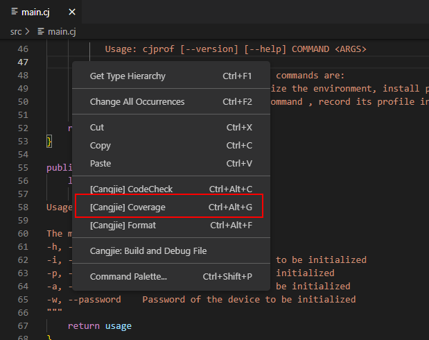
-
在 VSCode 的资源管理器中选择文件或者文件夹右键执行 [Cangjie] Coverage 命令，对选择的文件或者文件夹生成覆盖率报告。如下图：
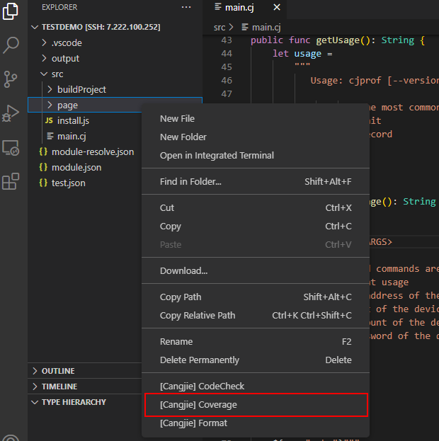
注意：当选择的文件夹中不含有仓颉文件时，将不会生成覆盖率报告。
在生成的覆盖率报告页面，点击文件名可以查看点击文件的覆盖率详情：